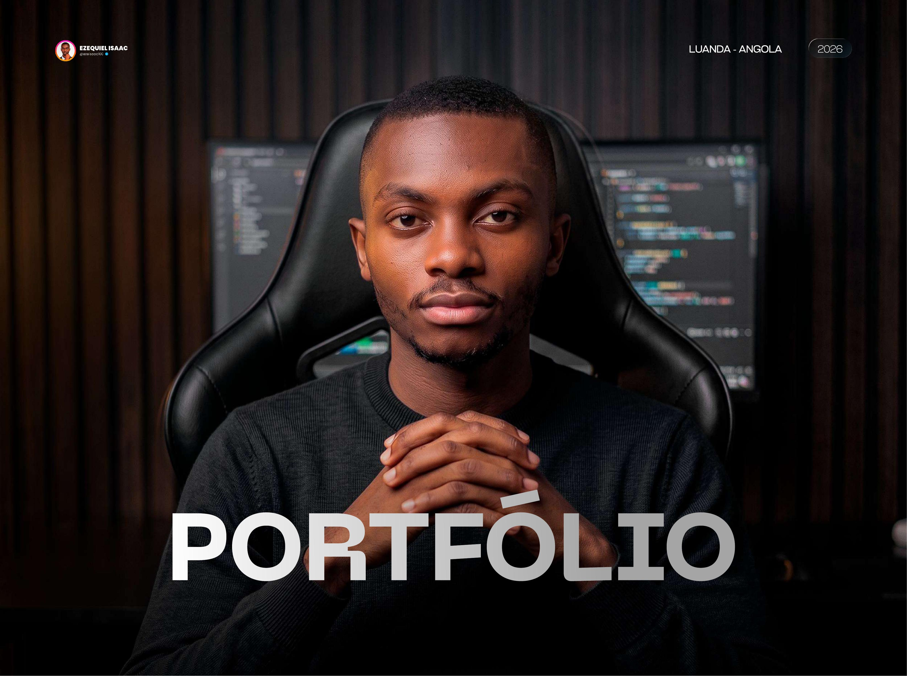
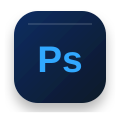
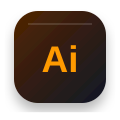
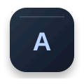

Design que dá
forma às ideias.
Sou Ezequiel Isaac, designer gráfico. Crio identidades, campanhas e conteúdos visuais para marcas que querem comunicar melhor. Cada projecto começa por perceber o que faz sentido para o negócio.

Prazer,
sou o Ezequiel.
Sou designer gráfico, em Luanda. Desde 2023, tenho trabalhado em projectos de comunicação para empresas e marcas de diferentes áreas. Gosto de perceber o que cada negócio precisa antes de começar a desenhar. É assim que procuro criar peças que não sejam apenas bonitas, mas úteis para quem as recebe.
As ferramentas
fazem parte do processo.
Do primeiro esboço à entrega final, escolho a ferramenta certa para cada etapa. O essencial continua a ser a ideia.



Uma selecção
do meu trabalho.
Identidades, campanhas e peças para redes sociais. Entra em cada série e vê como as ideias ganharam forma.
Tens um projecto?
Vamos conversar.
Explica-me o que precisas. O primeiro passo é perceber o teu negócio e o que queres comunicar.